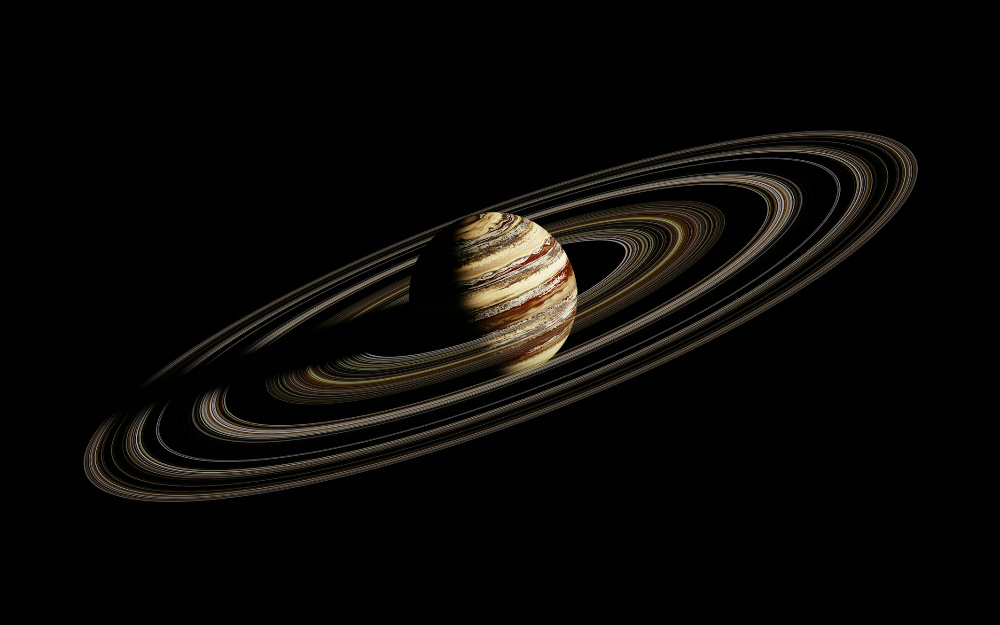

The Ringed Jewel of our Solar System

Saturn is the sixth planet from the Sun and the second-largest in the Solar System, after Jupiter. It is a gas giant with an average radius about nine times that of Earth. It has only one-eighth the average density of Earth; however, with its larger volume, Saturn is over 95 times more massive.
Saturn is famous for its prominent ring system, which is composed mainly of ice particles with a smaller amount of rocky debris and dust. The planet's interior is most likely composed of a core of iron–nickel and rock (silicon and oxygen compounds).
Saturn's rings are incredibly thin - only about 20 meters thick in most places, but they span up to 282,000 km in diameter.
Saturn has such a low density that if you could find a bathtub big enough, Saturn would float in water!
Saturn has the second fastest winds in the Solar System, reaching speeds of up to 1,800 km/h (1,100 mph).
Saturn's north pole features a persistent hexagonal cloud pattern, a six-sided jet stream about 30,000 km across.
Several spacecraft have visited Saturn, revealing its majestic rings and mysterious moons:
First spacecraft to fly by Saturn, discovering its thin F-ring and finding that the planet has a magnetic field.
Provided detailed images of Saturn's rings and discovered complex structures within them, as well as several new moons.
NASA/ESA mission that orbited Saturn for 13 years, delivering the Huygens probe to Titan and making countless discoveries about Saturn and its moons.
About 764 Earths could fit inside Saturn, but it has only 95 times Earth's mass due to its low density.
While all gas giants have rings, Saturn's are by far the largest and most visible from Earth with a small telescope.
Saturn has 146 known moons - second only to Jupiter. Titan, its largest moon, is bigger than Mercury and has a thick atmosphere.